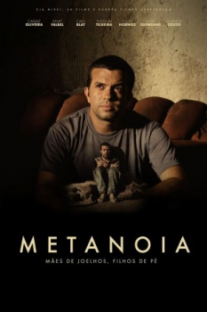

Metanoia (2015)


Mães de joelhos. Filhos de pé.

Avaliação (TMDb):


8.4/10 (4 votos)
Avaliação (Usuário):
País:Brazil, 113 minutos
Idiomas falados:Português
Gênero(s):Drama
Diretor(s):Miguel Nagle
Codec:MPEG-2 (DVD)
Número: 2141
Sinopse:
Em meio aos milhares usuários regulares e dependestes do crack, Eduardo (Caique Oliveira) é um deles. Criado na periferia de São Paulo, a boa educação oferecida por sua mãe, Solange, não impediu Eduardo de ficar preso no mundo das drogas. Perdido em meio a autodestruição, Solange tenta desesperadamente salvar o filho do crack
Elenco:
Caio Blat, Sílvio Guindane, Thogun Teixeira
Tipo de mídia: DVD5,
Legendas: Inglês, Espanhol, Português
Alugado: Não
Tela: 16:9 Widescreen